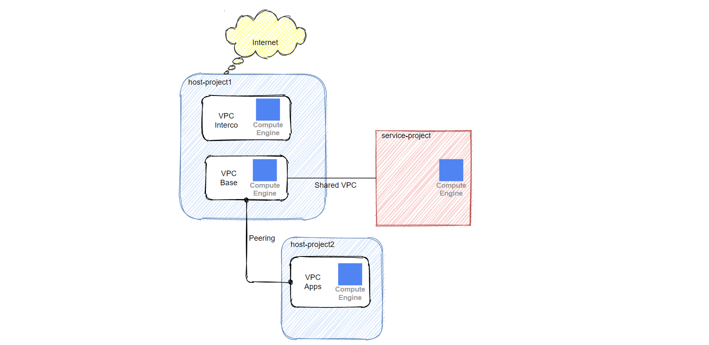
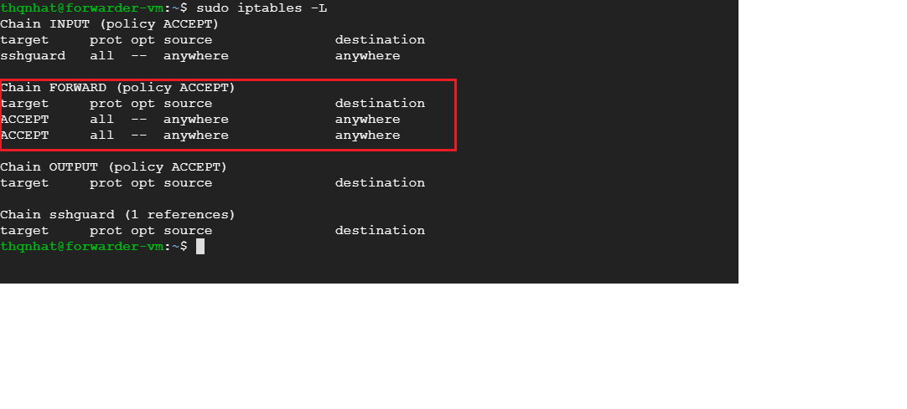
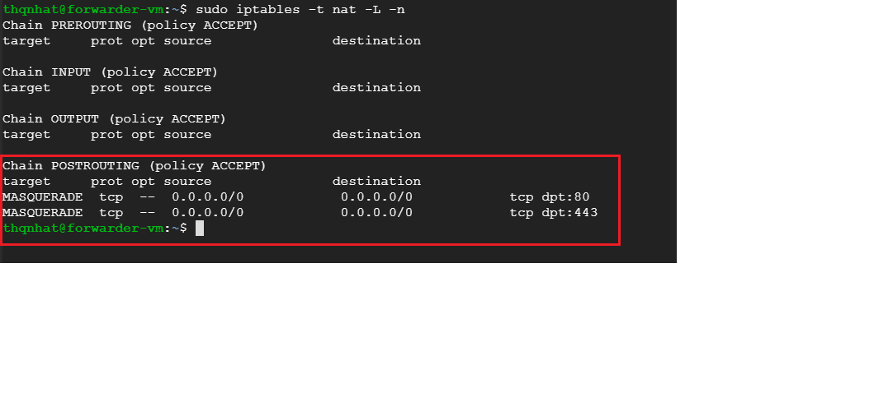

As you know in the previous article, we could take advantage of Cloud NAT to go to the Internet without an external IP.
But the NAT gateway created in one VPC network cannot provide NAT to VMs in other VPC networks connected by using VPC Network Peering, even if the VMs in peered networks are in the same region as the gateway.
So, how we can use Cloud NAT in case of we have some VPC networks ? I will explain to you in this article.
Set up a NAT Gatewat per VPC
This is the simplest solution. The NAT Gateway must be tied to a specific VPC. So you can set up a NAT Gateway on each VPC to allow your traffic to go to the Internet without an external IP assigned on each vm. But this solution is may be expensive if you have a number of VPC.
In this article, we will discuss how to set up only one NAT Gateway but that solution works well with multiple VPC.
Clean existing VPC
To ensure that our solution will be working as expected, you need to delete the existing VPC with its firewall. Also, we are going to create some new VPC to test this architecture.
Our architecture

According to the above architecture, we have three GCP projects: host-project1, host-project2 and service-project.
On the host-project1, we have two VPC created on the region europe-west1:
- base-vpc (base-snet: 10.23.0.16/28): it’s a Shared VPC. His subnet is shared with the instances created in service-project. We create an vm instance inside of this VPC named base-vm (europe-west1, zone b, Ubuntu 18.04, e2-micro, no External IP)
- interco-vpc (interco-snet: 10.22.0.0/28): VPC on which Cloud NAT is installed. We create an vm instance named forwarder-vm (europe-west1, zone b, Ubuntu 18.04, e2-micro, IP Forwarding On and no External IP) with two network interfaces:
- nic0: nic principal which point to interco-snet 10.22.0.0/28
- nic1: nic secondary which point to base-snet 10.23.0.16/28
Some default routes have been created for us. Then, we need to create some firewall rules to allow traffic of ssh,icmp,http and https.
So, create three firewall rules on base-vpc and two firewall rules on interco-vpc:
- Name: allow-ssh-base-vpc or allow-ssh-interco-vpc
- Network: base-vpc or interco-vpc
- Priority: 1000
- Type: Ingress
- Targets: All instances in the network
- Source filter: 35.235.240.0/20
- Protocol and ports: tcp:22
- Name: allow-icmp-base-vpc or allow-icmp-interco-vpc
- Network: base-vpc or interco-vpc
- Priority: 1000
- Type: Ingress
- Targets: All instances in the network
- Source filter: 10.23.0.0/16
- Protocol and ports: icmp (Others protocols)
- Name: allow-http-https-base-vpc
- Network: base-vpc
- Priority: 1000
- Type: Ingress
- Targets: All instances in the network
- Source filter: 10.23.0.0/16
- Protocol and ports: tcp:80 and tcp:443
On the service-project, we create a vm instance named svc-vm inside of base-snet.
On the host-project2, we have:
- apps-vpc (apps-snet: 10.23.0.32/28): it’s also a Shared VPC. Then, this VPC has peered with base-vpc. Like base-vpc, we create some firewall rules to allowing incoming connections using ssh or icmp.
Create a Cloud NAT
Create a Cloud NAT with following configurations:
- Gateway name: nat-gateway
- VPC Network: interco-vpc
- Region: europe-west1
- Cloud Router: create a new one of not exists
- NAP Mapping: Custom (interco-snet)
- NAT IP Addresses: Automatic
Create a route to Internet
We need to ensure that all traffic from base-vpc to be able to reach out to the Internet, we will create a new route on base-vpc forwarding it’s traffic to forwarder-vm :
- Name: my-route-to-the-internet
- Network: base-vpc
- Destination IP Range: 0.0.0.0/0
- Priority: 1000
- Next hop: Specify IP address (IP of forwarder-vm on nic1 created above)
Enable IP Forwarding
On the forwarder-vm, you need to enable IP Forwarding:
echo 1 | sudo tee /proc/sys/net/ipv4/ip_forward
To turn port forwarding on permanently, you will have to edit the /etc/sysctl.conf file. Open the file with sudo privileges by typing:
sudo nano /etc/sysctl.conf
Inside, find and uncomment the line that looks like this:
net.ipv4.ip_forward=1
Save and close the file when you are finished. You apply the settings in this file by typing:
sudo sysctl -p
sudo sysctl --system
Add the Forwarding Rules
You can list the network interface with this command:
ipconfig
As shown, we have two interfaces: ens4 (primary interface) and ens5 (secondary interface).
Then, we need to configure our firewall so that the traffic coming to the primary interface can be forwarded to the secondary interface and vice-versa.
sudo iptables -A FORWARD -i ens4 -o ens5 -j ACCEPT
sudo iptables -A FORWARD -i ens5 -o ens4 -j ACCEPT
Check:
sudo iptables -L

Add the NAT Rules
Next, we’ll add two nat rules (POSTROUTING) that will tell iptables how to route the traffic on port 80/443 to the Internet (SNAT).
sudo iptables -t nat -A POSTROUTING -p tcp --dport 80 -j MASQUERADE
sudo iptables -t nat -A POSTROUTING -p tcp --dport 443 -j MASQUERADE
Check:
sudo iptables -t nat -L -n

Test connectivity between vm on base-vpc to the Internet
At that time, the traffic on base-vpc could go to the Internet via Cloud NAT installed on interco-vpc without an external IP.
From base-vm on base-vpc, run the below commands:
curl ipconfig.io
curl http://example.com
curl https://portal.azure.com
The connectivity to the Internet works as expected!
Now, from svc-vm on the service-project, run the same command:
curl ipconfig.io
curl http://example.com
That also works well!
Add a VPC Peering
So, our configuration works well with only one Shared VPC at that time.
On the host-project2, let’s create a peering between the VPC apps-vpc and base-vpc (Import custom routes & Export custom routes) and vice-versa.
Peering from apps-vpc to base-vpc:
Peering from base-vpc to apps-vpc:
We notice also that our route my-route-to-internet (0.0.0.0/0) on base-vpc have been propagated automatically to apps-vpc via VPC Peering.
Now, we need to delete VPC’s default route to the Internet on apps-vpc.
On the forwarder-vm, we add a new route allowing the traffic from forwarder-vm comes back to our subnet 10.23.0.32/28 on apps-vpc
sudo ip route add 10.23.0.32/28 via 10.23.0.17 dev ens5
OK! Well done! Now, we can check the connectivity to the internet from apps-vm on apps-vpc via Cloud NAT.
curl ipconfig.io
curl http://example.com
curl https://portal.azure.com
Yeah! It works 😊
You may notice that we have the same public IP assigned 34.78.4.25 by Cloud NAT during our tests on different VPC.
This solution is also flexible. You could add a secondary forwarder-vm to ensure a good quality of service. Either, you could set up a middleware on forwarder-vm to control your web traffic (http/https) to the Internet (squid for example).